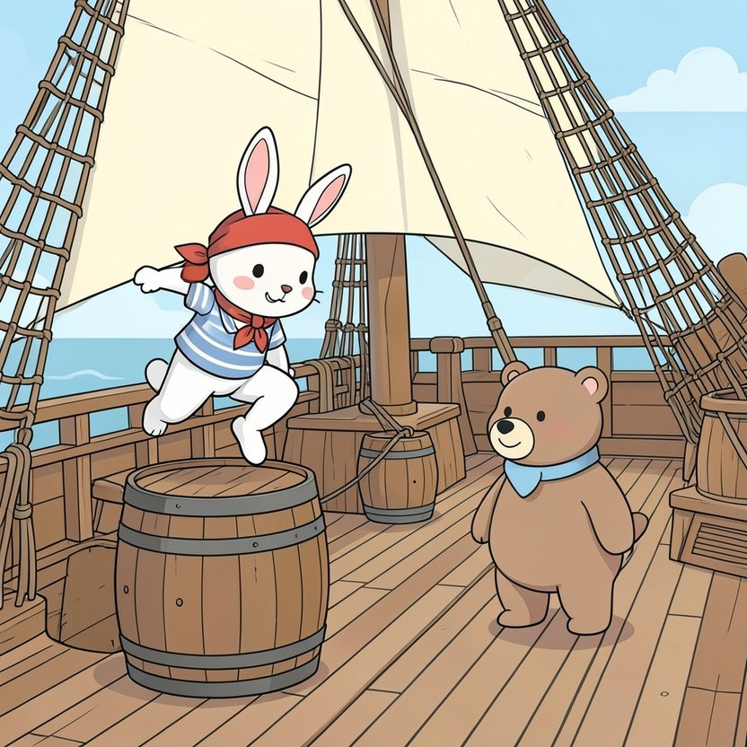

Titistoire › Les Étoiles (3-6 ans)
Rosie, capitaine d'un jour
Une histoire de Rosie la lapine pour parler de : écouter les autres.

▶ Écouter et regarder l'histoire
Gratuit, sans inscription : la voix lit, le texte suit mot à mot, les images tournent comme dans un album.
Le texte de l'histoire
À bord de La Coquille, personne ne file plus vite que Rosie. Elle escalade le mât en trois bonds, enjambe les tonneaux, noue dix nœuds à la minute, et elle a toujours terminé avant tout le monde.
« Si c'était moi la capitaine, fanfaronne-t-elle, les poings sur les hanches, on irait deux fois plus vite ! »
Un matin, la capitaine Mirabelle l'entend. Tranquillement, elle ôte son grand chapeau bleu et le pose sur les longues oreilles de Rosie. « Chiche ! Aujourd'hui, c'est toi qui commandes. Moi, je vais faire la sieste dans mon hamac. »
D'un bond, Rosie se perche sur un tonneau. « Écoutez tous, matelots ! Cap sur l'île aux Ananas ! Un, deux, trois, PARTEZ ! »
« Toi, hisse la voile ! Plus vite ! Toi, frotte le pont ! Mais non, pas comme ça ! Et toi… donne-moi ce balai ! Pousse-toi, je vais le faire moi-même ! »
L'équipage s'affaire, court, se bouscule, des seaux et des cordages plein les pattes. Rosie lance trente ordres à la minute. Elle parle si vite qu'elle n'entend plus rien d'autre que sa propre voix.
« Hmm… Capitaine Rosie, commence Nestor en levant la patte, le vent tourne, il faudrait peut-être… » « Pas le temps ! » « Capitaine Rosie, tente le cuisinier, sa louche à la main, pour le déjeuner… » « Plus tard ! »
Tout en haut du mât, une petite voix essaie à son tour. C'est Sardine, la souris vigie, penchée hors de son nid-de-pie. « Capitaine ! J'aperçois quelque chose, droit devant ! »
Rosie met un doigt sur sa bouche. « Chut, Sardine ! C'est moi qui commande, c'est moi qui sais ! Plus vite, la voile ! »
La Coquille fend les vagues comme une flèche. Rosie jubile. Droit devant, un gros nuage blanc s'est posé sur la mer, épais comme du coton. Du brouillard. « On passe à travers. Tout droit ! »
« Capitaine ! s'égosille Sardine. Dans le brouillard, il y a des… » « J'ai dit chut ! » Sardine ouvre la bouche. La referme. Puis elle se rassoit, les oreilles basses, et se tait.
Le brouillard avale le bateau tout entier. On ne voit plus le bout de son museau, à peine la petite lueur de la lanterne. Tout est blanc, tout est silencieux. Un peu trop silencieux.
CRRRAC ! Tout le monde dégringole sur les planches, les quatre pattes en l'air. La Coquille est coincée entre deux rochers, penchée comme une assiette qu'on a mal rangée.
« Des rochers ! s'étrangle Rosie, le chapeau de travers. Mais pourquoi personne ne m'a prévenue ? » L'équipage la regarde sans broncher. Personne ne répond.
Alors Sardine lève une patte timide. Sa voix est toute menue : « J'ai essayé, capitaine. Deux fois. » Rosie sent ses grandes oreilles devenir très, très chaudes.
Rosie se laisse tomber sur le pont. Le grand chapeau lui glisse sur les yeux. Il est lourd, finalement. Beaucoup plus lourd qu'il n'en a l'air.
Elle soulève le bord du chapeau et voudrait lancer un ordre. Mais lequel ? Sa bouche s'ouvre, rien n'en sort. Pour la première fois de sa vie, Rosie reste muette comme une carpe.
Et dans le silence, une oreille dressée, elle entend des choses. Le bois qui grince. L'eau qui clapote contre la coque. Et son équipage qui chuchote : « Moi, j'ai une idée… » « Moi aussi… »
Rosie ôte le chapeau et le garde entre ses pattes. « Je vous écoute. » Ces trois mots-là lui font tout drôle dans la bouche. « Nestor ? » « Hmm… Si on poussait tous du même côté, quand la vague arrive… »
« Sardine ? » « De là-haut, j'ai repéré un passage entre les rochers ! Je peux vous guider. » « Et moi, ajoute le cuisinier en brandissant sa motte, j'ai du beurre pour faire glisser la coque ! »
Une vague enfle derrière eux. « Tous ensemble ! lance Rosie. Un, deux, trois… POUSSEZ ! » Ils poussent, épaule contre épaule. Et scrouitch ! La Coquille glisse, se redresse, et flotte.
« À gauche ! » crie Sardine. Rosie tourne à gauche. « Tout droit ! » Rosie va tout droit. Et soudain le brouillard s'écarte comme un rideau : voici le soleil, et l'île aux Ananas, toute verte.
Dans son hamac, la capitaine Mirabelle s'étire juste à ce moment-là, un œil ouvert, l'autre fermé. Enfin… peut-être qu'elle ne dormait pas vraiment. « Alors, capitaine Rosie ? C'est comment, de commander ? »
Rosie lui rend son chapeau. « C'est surtout avec les oreilles, répond-elle en riant. Heureusement, j'en ai des grandes ! »